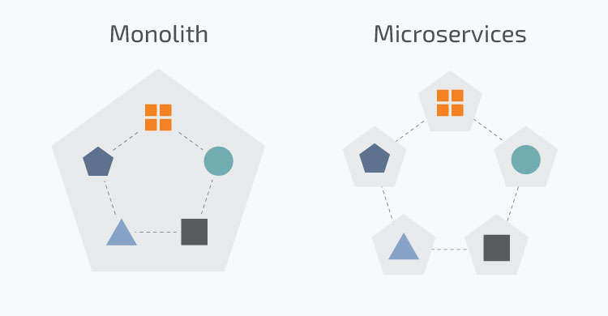
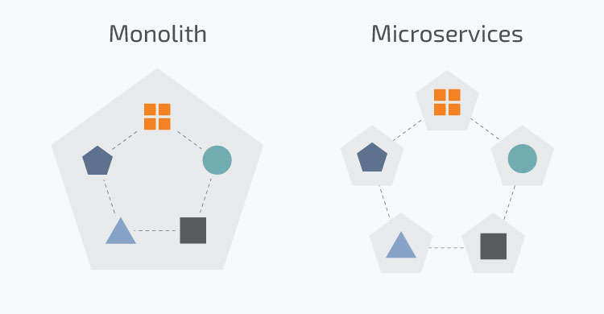
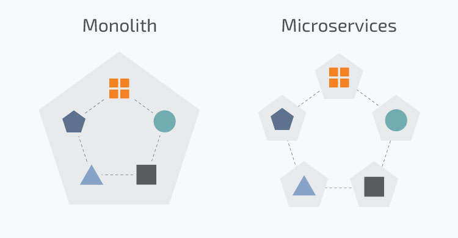

Microservices are an architectural and organizational approach to software development where software is composed of small independent services that communicate over well-defined APIs. These services are owned by small, self-contained teams. Microservices architectures make applications easier to scale and faster to develop, enabling innovation and accelerating time-to-market for new features Microservices is a specialization of an implementation approach for service-oriented architectures (SOA) used to build flexible, independently deployable software systems. The microservices approach is the first realisation of SOA that followed the introduction of DevOps and is becoming more popular for building continuously deployed systems. In February 2020, the Cloud Microservices Market Research Report predicted that the global microservice architecture market size will increase at a CAGR of 21.37% from 2019 to 2026 and reach $3.1 billion by 2026.
Benifits
Monolithic Vs Microservices
With monolithic architectures, all processes are tightly coupled and run as a single service. This means that if one process of the application experiences a spike in demand, the entire architecture must be scaled. Adding or improving a monolithic application’s features becomes more complex as the code base grows. This complexity limits experimentation and makes it difficult to implement new ideas. Monolithic architectures add risk for application availability because many dependent and tightly coupled processes increase the impact of a single process failure With a microservices architecture, an application is built as independent components that run each application process as a service. These services communicate via a well-defined interface using lightweight APIs. Services are built for business capabilities and each service performs a single function. Because they are independently run, each service can be updated, deployed, and scaled to meet demand for specific functions of an application.
